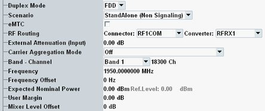
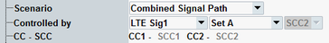

The parameters at the top of the configuration tree configure the RF input path. Most parameters are common measurement settings. They have the same value in all measurements (for example PRACH measurement and multi-evaluation measurement).

Selects the duplex mode of the LTE signal: FDD or TDD.
In the standalone (SA) scenario, this parameter is controlled by the measurement. In the combined signal path (CSP) scenario, it is controlled by the signaling application.
The measurement is used standalone.
Remote command:
Allows you to use an LTE signaling application (option R&S CMW-KS500/-KS550) in parallel to the LTE measurement.
The additional parameter "Controlled by" selects the signaling application and the uplink carrier to be measured.
For contiguous uplink CA, you select a set of carriers (for example "Set A") instead of a single carrier. An additional field to the right indicates the component carrier used by the measurement to select the RF path. A single input path is used to measure all aggregated carriers. The carriers of the set (PCC / SCC<n>) are listed in an additional line. The name "CCn" is used within the measurement to identify the carriers.
In a multi-CMW setup, ensure that the selected carrier or set and the measurement instance are in the same CMW. Otherwise, the measurement fails. See also "Measurement instances in multi-CMW setups".
Most parameters described in this section and some measurement control settings display values determined by the signaling application. The corresponding measurement settings are remembered in the background and displayed again when switching back to the standalone scenario.
Connection status information of the signaling application is displayed at the bottom of the measurement views. Softkeys and hotkeys provide access to the settings of the signaling application and allow you to switch the downlink signal on or off, see "Additional Softkeys and Hotkeys".
For additional information, see "Parallel Signaling and Measurement".
Remote command:Allows you to use an LTE protocol test application in parallel to the LTE measurement. The protocol test application is selected by the additional parameter "Controlled by".
The signal routing and analyzer settings described in this section are ignored by the measurement application. Configure the corresponding settings within the protocol test application.
Remote command:Enables enhanced machine type communication (eMTC).
- The measurement expects an eMTC narrowband signal. To select the narrowband, see "Narrowband".
- The inband emission limits are related to the narrowband, not to the channel, see "Inband Emissions Limits".
- SC-FDMA symbols in guard periods for narrowband retuning are detected and excluded from the modulation results.
- Some features are not relevant for eMTC and cannot be enabled (carrier aggregation, multicluster, SRS, automatic channel type detection).
In the standalone (SA) scenario, this parameter is controlled by the measurement. In the combined signal path (CSP) scenario, it is controlled by the signaling application.
Selects the input path for the measured RF signal, i.e. the input connector and the RX module to be used.
In the standalone (SA) scenario, these parameters are controlled by the measurement. In the combined signal path (CSP) scenario, they are controlled by the signaling application.
For connector and converter settings in the combined signal path scenario, use one of the ROUTe:LTE:SIGN<i>:SCENario:... signaling commands.
Remote command:ROUTe:LTE:SIGN<i>:SCENario:... (CSP)
Defines the value of an external attenuation (or gain, if the value is negative) in the input path. The power readings of the R&S CMW are corrected by the external attenuation value.
The external attenuation value is also used in the calculation of the maximum input power that the R&S CMW can measure.
If a correction table for frequency-dependent attenuation is active for the chosen connector, then the table name and a button are displayed. Press the button to display the table entries.
In the standalone (SA) scenario, this parameter is controlled by the measurement. In the combined signal path (CSP) scenario, it is controlled by the signaling application.
Selects whether the measured signal uses carrier aggregation or not, see "Carrier Aggregation Settings".
Carrier aggregation is not allowed for eMTC.
Center frequency of the RF analyzer for measurements without carrier aggregation. Set this frequency to the frequency of the measured RF signal to obtain a meaningful measurement result. The relation between operating band, frequency and channel number is defined by 3GPP (see "Frequency Bands").
- Enter the frequency directly. The band and channel settings can be ignored or used for validation of the entered frequency. For validation, select the designated band. The channel number resulting from the selected band and frequency is displayed. For an invalid combination, no channel number is displayed.
- Select a band and enter a channel number valid for this band. The R&S CMW calculates the resulting frequency.
In the standalone (SA) scenario, these parameters are controlled by the measurement. In the combined signal path (CSP) scenario, they are controlled by the signaling application.
Positive or negative frequency offset to be added to the specified center frequency of the RF analyzer.
In the standalone (SA) scenario, this parameter is controlled by the measurement. In the combined signal path (CSP) scenario, it is controlled by the signaling application.
Defines the nominal power of the RF signal to be measured. An appropriate value for LTE signals is the peak output power at the DUT during the measurement. The "Ref. Level" is calculated as follows:
Reference level = Expected Nominal Power + User Margin
Note: The actual input power at the connectors must be within the level range of the selected RF input connector; refer to the data sheet. If all power settings are configured correctly, the actual power equals the "Reference Level" minus the "External Attenuation (Input)" value.
In the standalone (SA) scenario, this parameter is controlled by the measurement. In the combined signal path (CSP) scenario, it is controlled by the signaling application.
Margin that the R&S CMW adds to the "Expected Nominal Power" to determine its reference power ("Ref. Level"). The "User Margin" is typically used to account for the known variations of the RF input signal power, e.g. the variations due to a specific channel configuration.
The variations (crest factor) depend on the LTE signal parameters, in particular the modulation scheme. If the "Expected Nominal Power" is set to the peak power during the measurement, a 0 dB user margin is sufficient.
In the standalone (SA) scenario, this parameter is controlled by the measurement. In the combined signal path (CSP) scenario, it is controlled by the signaling application.
Varies the input level of the mixer in the analyzer path. A negative offset reduces the mixer input level. A positive offset increases the mixer input level. Optimize the mixer input level according to the properties of the measured signal.
Mixer level offset | Advantages | Possible shortcomings |
|---|---|---|
< 0 dB | Suppression of distortion (e.g. of the intermodulation products generated in the mixer) | Lower dynamic range (due to smaller signal-to-noise ratio) |
> 0 dB | High signal-to-noise ratio, higher dynamic range | Risk of intermodulation, smaller overdrive reserve |
In the standalone (SA) scenario, this parameter is controlled by the measurement. In the combined signal path (CSP) scenario, it is controlled by the signaling application.